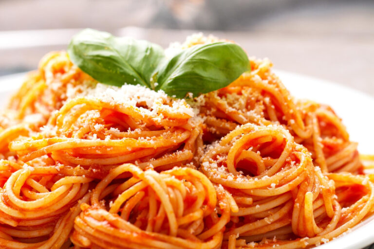

Macarronada

Ingredientes
- 500g de macarrão (espaguete ou penne)
- 300g de carne moída
- 1 lata de molho de tomate
- 1 cebola picada
- 2 dentes de alho
- Azeite a gosto
- Sal e pimenta a gosto
- Queijo ralado para finalizar
Modo de Preparo
- Cozinhe o macarrão em água com sal até ficar al dente.
- Escorra e reserve.
- Em outra panela, refogue a cebola e o alho no azeite.
- Adicione a carne moída e cozinhe até dourar.
- Coloque o molho de tomate e deixe apurar por 10 minutos.
- Misture o molho ao macarrão.
- Finalize com queijo ralado e sirva quente.